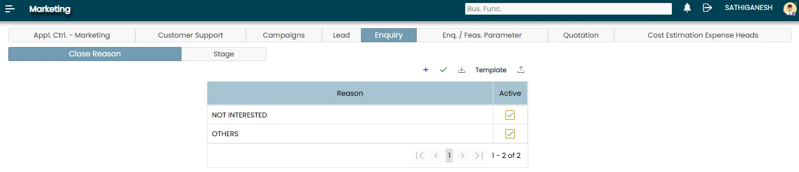

<div data-category="CRM" data-title="Close Reason" data-updated="December 01, 2025" data-contributors="RoadmapIT" data-breadcrumb="Home,CRM,Close Reason">
  <div class="page-content">
    <p>A close reason refers to the specific rationale recorded when an opportunity or deal is marked as closed. This can apply to both successful and unsuccessful outcomes. Closure reasons help sales teams understand why a deal was won or lost, Close reason are all configured in this screen.</p>
    <h5>Navigation path:</h5>
    <p class="fs-6">CRM \ Setup \ Setup-Marketing \ Enquiry \ Close Reason</p>
    
    <ul style="list-style-type: none; align-content: center">
      <li class="mouse-icon">Click on <i class="bi bi-plus fs-4 mx-2 text-primary"></i> button</li>
      <li class="mouse-icon">Enter the Close Reason</li>
      <li class="mouse-icon">Select the Active flag if the Close Reason is to be used in transactions.</li>
      <li class="mouse-icon">Click <i class="bi bi-check-lg fs-4 mx-1 text-success"></i> to save</li>
    </ul>
  </div>
</div>
